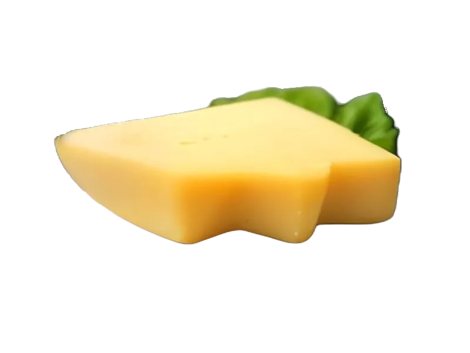

Sery
Ser Limburger
Ser Limburger: 20 g białka, 327 kcal, 0.5 g węglowodanów i 27 g tłuszczu na 100 g. Kategoria: Sery.
Kalorie327 kcalna 100 g
Białko / proteiny20 g
Węglowodany0.5 g
Tłuszcz27 g
Cena (szac.)~4,50 złza 100 g
Ceny zaktualizowano: sierpień 2026 (szacunek — ceny w popularnych supermarketach)
Porcja: plaster (30g)
| Kalorie | 98 kcal |
|---|---|
| Białko | 6 g |
| Węglowodany | 0.1 g |
| Tłuszcz | 8.1 g |
| Cena (szac.) | ~1,45 zł |
Szczegółowe składniki odżywcze na 100 g
| Wartość energetyczna (kalorie) | 327 kcal |
|---|---|
| Białko (proteiny) | 20 g |
| Węglowodany | 0.5 g |
| Tłuszcz | 27 g |
| Tłuszcze nasycone | 17 g |
| Tłuszcze nienasycone | 10 g |
| Witaminy i minerały (skrót) | Fosfor, Wapń, Witamina B12 |
| Współczynnik kcal / 1 g białka | 16.4 |
| Cena produktu (szac. za 100 g) | ~4,50 zł |
| Cena za 100 g białka (szac.) | ~24,17 zł |
Witaminy i minerały na 100 g
Ilość w 100 g produktu oraz orientacyjny % dziennego zapotrzebowania (RDA) dla dorosłej osoby. Żelazo wg normy dla kobiet; sód jako % limitu. Wartości typowe (USDA / tabele żywieniowe / etykiety) — mogą się różnić między markami.
-
Witamina A 240 µg
-
Witamina B2 (ryboflawina) 0.35 mg
-
Witamina B5 0.5 mg
-
Witamina B6 0.08 mg
-
Witamina B12 1 µg
-
Cholina 15 mg
-
Wapń 500 mg
-
Żelazo 0.3 mg
-
Magnez 25 mg
-
Fosfor 390 mg
-
Potas 130 mg
-
Cynk 2.5 mg
-
Selen 15 µg
-
Miedź 60 µg
-
Jod 20 µg
-
Sód 800 mg